Kaggle
Is this value missing because it wasn't recorded or because it doesn't exist? If a value is missing becuase it doesn't exist (like the height of the oldest child of someone who doesn't have any children) then it doesn't make sense to try and guess what it might be. These values you probably do want to keep as NaN. If a value is missing because it wasn't recorded, then you can try to guess what it might have been based on the other values in that column and row. This is called imputation.
If you're in a hurry or don't have a reason to figure out why your values are missing, one option you have is to just remove any rows or columns that contain missing values:
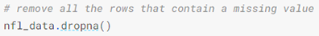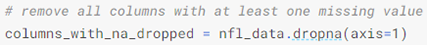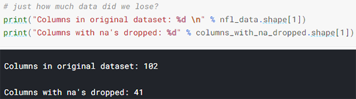Another option is to try and fill in the missing values. We can use the Panda's fillna() function to fill in missing values in a dataframe for us. One option we have is to specify what we want the NaN values to be replaced with:
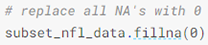I could also be a bit more savvy and replace missing values with whatever value comes directly after it in the same column. (This makes a lot of sense for datasets where the observations have some sort of logical order to them.)
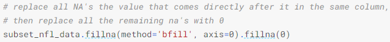In scaling, you're changing the range of your data, while in normalization, you're changing the shape of the distribution of your data. The point of normalization is to change your observations so that they can be described as a normal distribution.
Normal distribution: Also known as the "bell curve", this is a specific statistical distribution where a roughly equal observations fall above and below the mean, the mean and the median are the same, and there are more observations closer to the mean. The normal distribution is also known as the Gaussian distribution.
In general, you'll normalize your data if you're going to be using a machine learning or statistics technique that assumes your data is normally distributed.
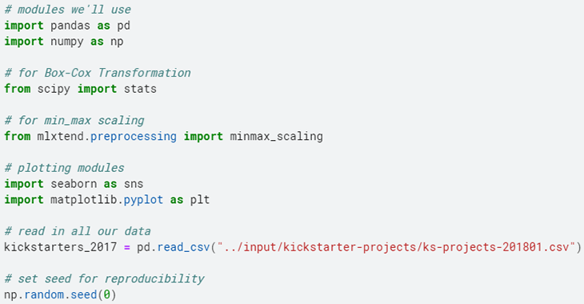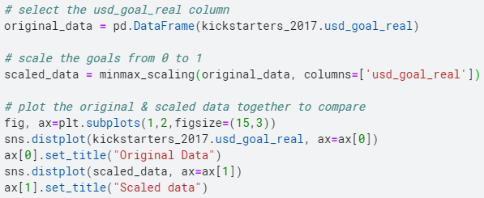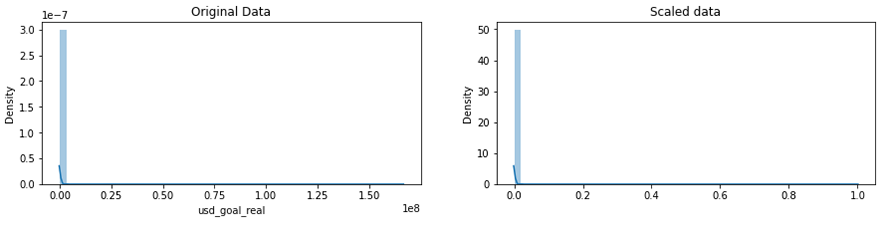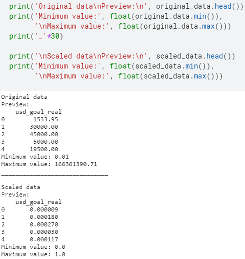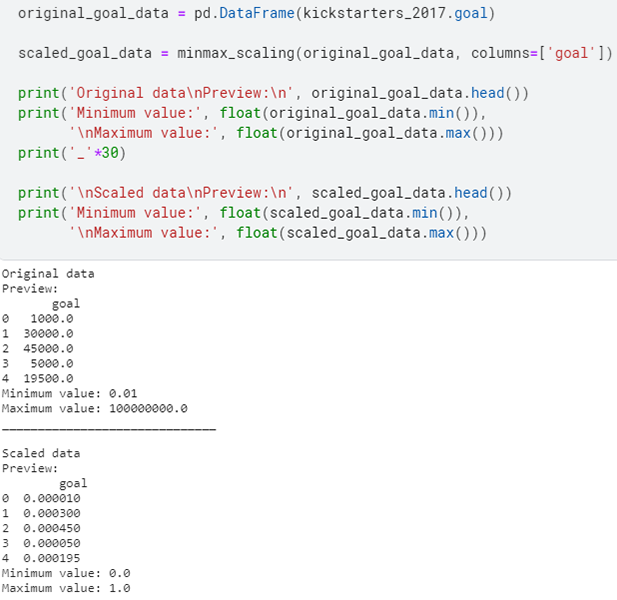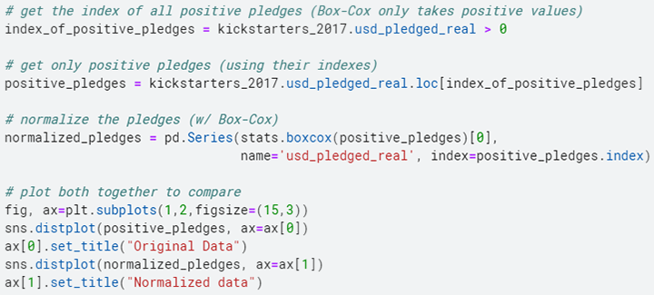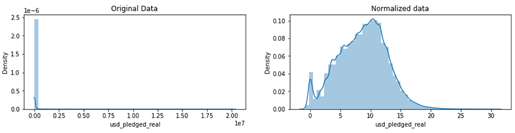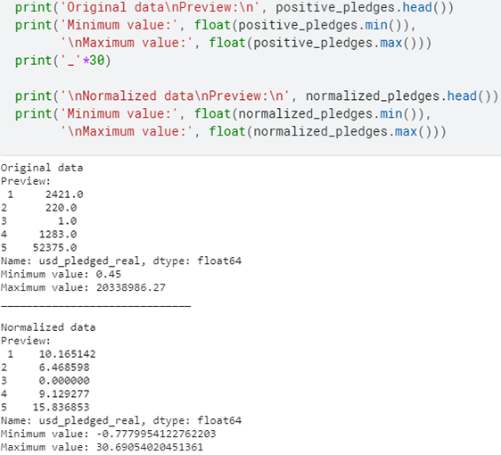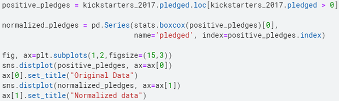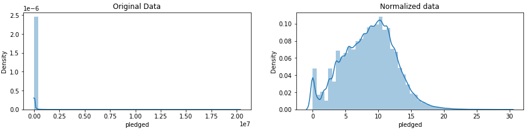Because the dtype of our column is object rather than datetime64, we can tell that Python doesn't know that this column contains dates.
Parsing dates: The basic idea is that you need to point out which parts of the date are where and what punctuation is between them. There are lots of possible parts of a date, but the most common are %d for day, %m for month, %y for a two-digit year and %Y for a four digit year (1/17/07 has the format "%m/%d/%y", 17-1-2007 has the format "%d-%m-%Y").
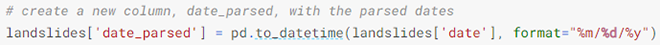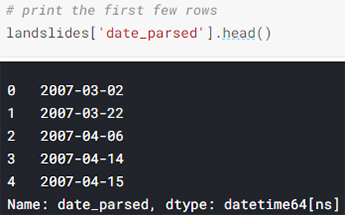While we're specifying the date format here, sometimes you'll run into an error when there are multiple date formats in a single column:
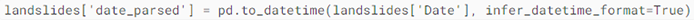There are two big reasons not to always have pandas guess the time format. The first is that pandas won't always been able to figure out the correct date format, especially if someone has gotten creative with data entry. The second is that it's much slower than specifying the exact format of the dates.
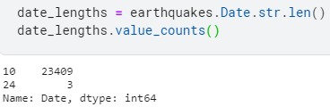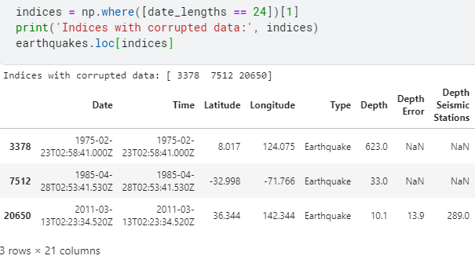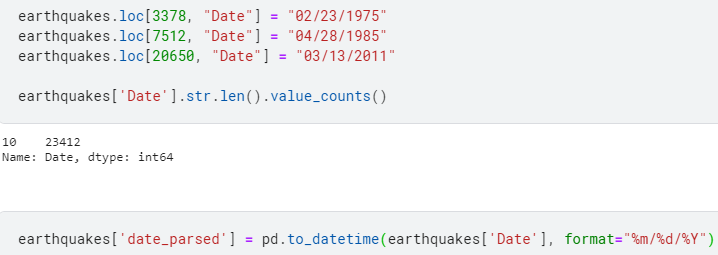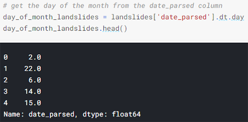One of the biggest dangers in parsing dates is mixing up the months and days. The to_datetime() function does have very helpful error messages, but it doesn't hurt to double-check that the days of the month we've extracted make sense:
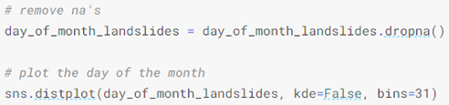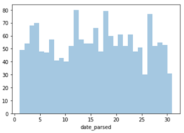Fuzzy matching: The process of automatically finding text strings that are very similar to the target string. In general, a string is considered "closer" to another one the fewer characters you'd need to change if you were transforming one string into another. Fuzzywuzzy returns a ratio given two strings. The closer the ratio is to 100, the smaller the edit distance between the two strings:
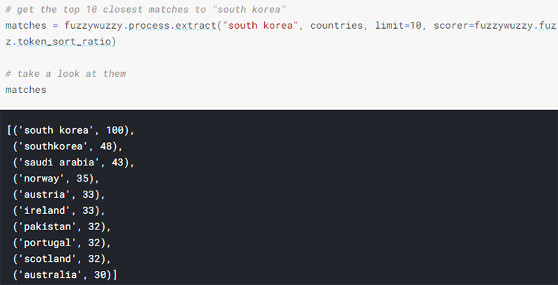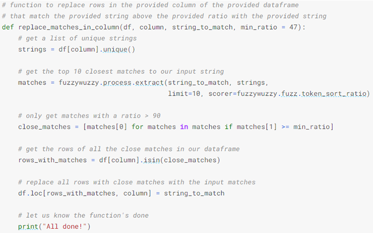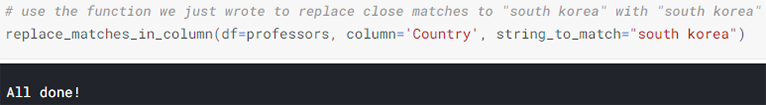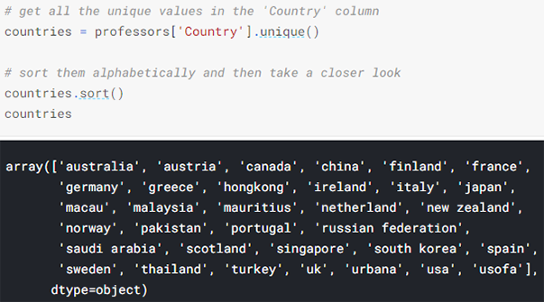